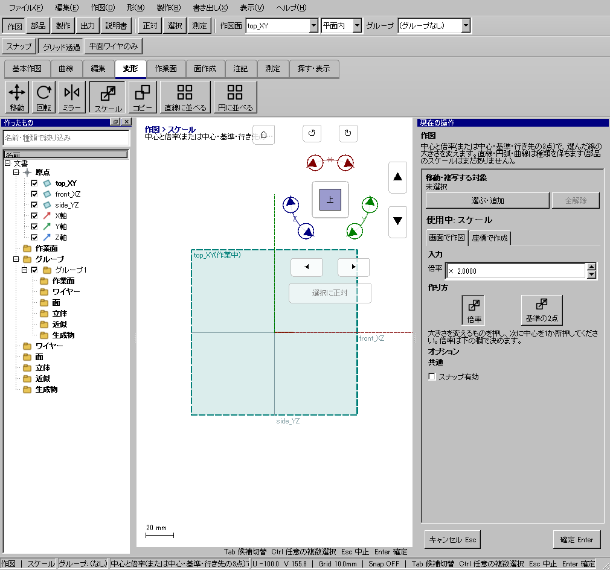
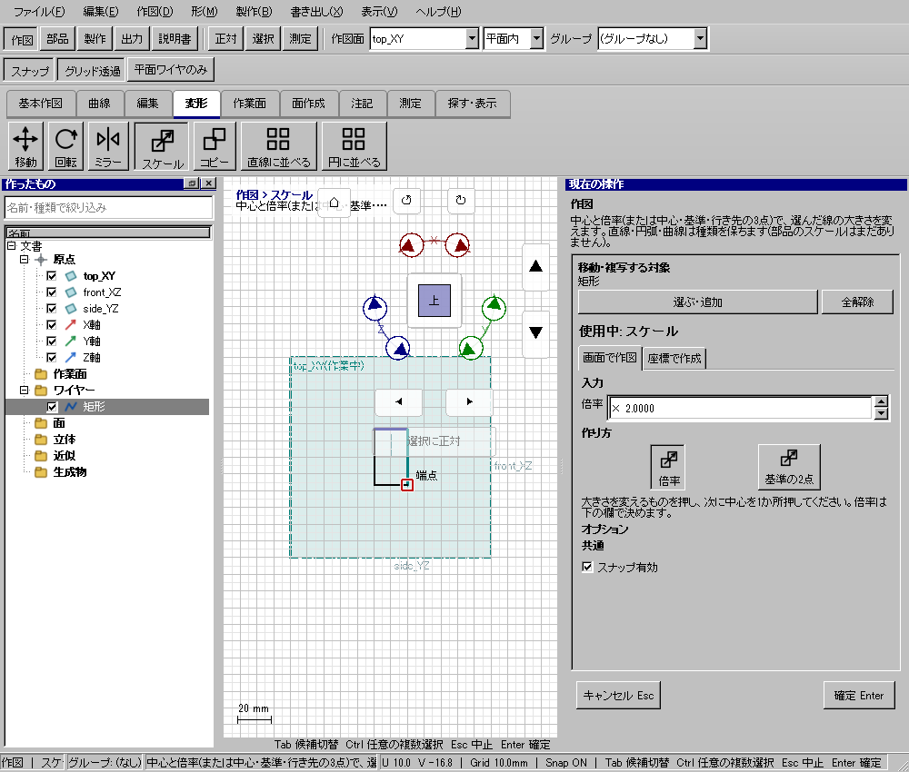

20mmの線を2倍にする
使う機能：スケール
倍率方式では先に倍率を入れてから中心を1点指定します。基準方式では中心・基準点・行先を指定します。参照距離が0の入力は使えません。
中心からの距離が2倍になり、線の長さが40mmになる。
1 準備 — 元の図形から作る
線A(0,0)→(20,0)を作る。
まだ用意できていなければ、次の手順を先に行ってください。既にモデルがある場合も、例の座標・大きさ・面の向きを自分のモデルへ読み替えます。
- 指定座標の直線・円・円弧を準備する — 図形の作成から順に練習できます。
- 線・面・部品を取り違えずに選ぶ — 図形の作成から順に練習できます。
練習前にKCD2を別名保存します。数値の長さはmm、角度は度です。平面内のu/vと世界XYZを区別します。
2 使う道具を開く — 押す場所
- 作図 → 変形 → スケール
別の入口：Ctrl+K → スケールを検索 → 候補の用途を確認して開きます。別モードなら「全モードから探す」をオンにします。

3 操作手順 — 一つずつ進める
1 スケールを選ぶ
この段階で確認：この操作で使う入力：線A(0,0)→(20,0)を作る
2 線Aを選ぶ
この段階で確認：使う対象・値：倍率2
3 倍率2を入力し、中心(0,0,0)を指定する
この段階で確認：中心からの距離が2倍になり、線の長さが40mmになる。
4 設定する欄と数値
ボタン名・欄名と、今回使う値を対応させてください。項目が出ていない場合は作り方・モードが合っているか確認し、ペイン内をスクロールします。
| 見る欄・役割 | この例の設定と意味 |
|---|---|
| 倍率 | 2 |
| 中心 | 0,0 |
| 元長さ | 20mm |
| 結果長さ | 40mm |
選択の確認：役割欄の名前と3Dの強調を照合します。重なって拾いにくい時はTabで候補を替えます。全体を使う例では左一覧の要素名を選び、3Dの1辺選択と区別します。

この実画面は既存操作試験の一場面で、下の数値例の完成画像とは限りません。設定・選択の操作画面。具体的な完成例は段階写真のある作業例を参照してください。
5 確定して結果を確認
最後の点や配置位置を指定した時点で、この1回の操作が完了します。数値欄を入力するEnterと、形を完成させる操作を画面下の案内で区別します。
中心からの距離が2倍になり、線の長さが40mmになる。
形を作る操作では、元と結果の名前を分けて一覧で確認し、必要に応じて元を一時非表示にします。表示だけの機能では形状や要素数を変えることが目的ではありません。
6 取消・やり直し・保存
入力をやめる時はEscを使います。作図で直前の点を戻す場合は、画面の案内に従ってBackspaceを使います。確定後の図面変更はCtrl+Zです。
モデルの編集正本はKCD2、説明書の編集正本はKCIです。外部へ出力するだけの機能では、出力ファイルと編集元を両方残してください。
進めない場合 — 症状から戻る場所を探す
| 起きていること | 確認して直す場所 |
|---|---|
| 違う点から伸びる | 中心の位置を確認 |
| 基準点方式と倍率欄を混ぜた | 方式を選び直して入力し直す |
この機能の入力条件：ワイヤーを1つ以上選んでください。
計算中は処理表示を見ます。失敗が出たら、対象・入力条件を変えずに何度も押すのでなく、案内にある対象と条件を確認します。
別の方式・条件で使う
倍率
まず主手順で入力の役割を確認し、この例の値と操作へ置き換えます。
この例の準備：20mmの直線
右ペインで倍率方式と2を設定してから中心をクリックします。0,0を中心に20mm線を拡大すれば40mmです。中心以外の点の距離も2倍です。
- 対象を選ぶ
- 倍率2を設定
- 中心(0,0)を指定
結果の見分け方：長さ40mmになる
この実画面は既存操作試験の一場面で、下の数値例の完成画像とは限りません。方式間で共通の入力欄を確認する参考画面です。この方式・上記の数値で確定した結果の画像ではありません。
基準の2点
まず主手順で入力の役割を確認し、この例の値と操作へ置き換えます。
この例の準備：長さ20mmの直線
中心0,0、元の基準点20,0、行先10,0の順です。基準距離20が10へ縮まり倍率0.5になります。中心と基準点を同じ位置に置かないでください。
- 対象を選ぶ
- 中心(0,0)
- 基準点(20,0)
- 行先(10,0)
結果の見分け方：基準寸法が10mmになる
この実画面は既存操作試験の一場面で、下の数値例の完成画像とは限りません。方式間で共通の入力欄を確認する参考画面です。この方式・上記の数値で確定した結果の画像ではありません。
参考画面の出典と確認範囲
試験名：HP-DM-10 スケールは倍率でも基準の2点でも線の大きさを変え1回で戻る。試験全体の結果：passed。画像はコマンド呼出し直後で、入力待ち・下見の場合もあります。各段階の完成証拠ではありません。